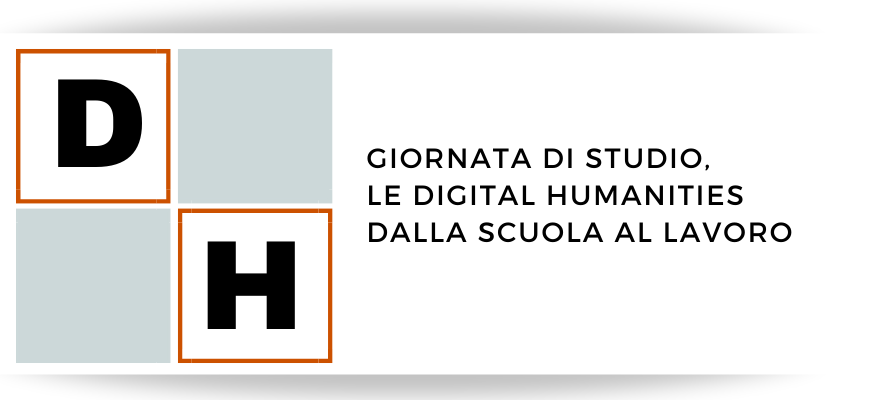

Le Digital Humanities (DH) sono una realtà consolidata, ma dai confini frastagliati, tanto in tema di ricerca, quanto di formazione, sia scolastica che universitaria, e ancora di lavoro. Questa giornata di studio vuole mettere a confronto diversi punti di vista sulle DH. Quello della scuola, da cui parte l’educazione al digitale, in particolare nello studio del rapporto con le discipline umanistiche; quello dell’Università, dove corsi di studio, dottorati, innovativi centri e progetti di ricerca sono da anni il luogo per formazione e produzione di conoscenza sulle DH; e infine quello del lavoro, che chiede a tante realtà professionali di confrontarsi con il digitale e le discipline umanistiche, in una prospettiva di riconfigurazione della propria missione o di apertura verso nuove frontiere.
Dopo i saluti istituzionali, la lezione di Luciano Violante ci introduce al tema del digitale nelle scuole, attraverso la sua proposta di una nuova sperimentazione di Liceo. Segue la presentazione delle attività dell’Università di Bologna, e in particolare del Dipartimento di Filologia Classica e Italianistica con BolDH.unibo, nel campo delle DH (Laurea Magistrale internazionale, Dottorato, Centro di ricerca, Laboratorio di digitalizzazione e attività di terza missione). Non manca la voce dei rappresentanti di Istruzione, Cultura e Università, le tre realtà istituzionali maggiormente coinvolte in questo percorso sulle DH: l’istruzione per la formazione scolastica, la cultura per l’importanza di tutelare e valorizzare il nostro patrimonio, ed infine l’università per ragionare sul presente e sul futuro dei percorsi accademici in DH e sulle forme di un giusto riconoscimento di chi fa ricerca in un settore così all’avanguardia. Il pomeriggio è dedicato al confronto con il mondo del lavoro, per riflettere sulle ricadute di un sapere ibrido, a cavallo fra le ‘due culture’, e discutere sulla capacità delle aziende di assorbire chi sia formato nel settore delle DH. La giornata si conclude con una tavola rotonda, in memoria di uno dei fondatori dell’Informatica Umanistica in Italia, ovvero Dino Buzzetti, su un tema a lui molto caro, ovvero la ‘formazione dei formatori’. La tavola rotonda è organizzata dalla nostra Associazione per l’Informatica Umanistica e la Cultura Digitale, fondata nel 2011, con l’obiettivo, fra gli altri, di aggregare chi si occupa dell’attraente e intrigante, ma anche dibattuto e complicato, mondo delle DH.
27 Settembre 2023 - Dalle 9.30 alle 18.00.
9.30-10.00
Saluti Istituzionali
Federico CONDELLO, Delegato dell'Ateneo di Bologna per le Studentesse e gli Studenti e Delegato dell'Ateneo di Bologna per la Comunicazione istituzionale
Giuliana BENVENUTI, Delegata dell'Ateneo di Bologna per il Patrimonio Culturale
Ivano DIONIGI, Presidente del Consorzio Interuniversitario AlmaLaurea
Nicola GRANDI, Direttore del Dipartimento di Filologia Classica e Italianistica dell’Università di Bologna
Francesco CITTI, Direttore della Biblioteca Universitaria di Bologna
10.00 - 11.00
Lectio magistralis
Luciano VIOLANTE, Presidente della Fondazione Leonardo – Civiltà delle Macchine, Per una pedagogia del digitale
Introduce e modera Paola ITALIA
11.00-11.30
Pausa caffè
11.30-12.00
Presentazione di BolDH.unibo - per un ecosistema delle Digital Humanities a Bologna
Dipartimento di Filologia Classica e Italianistica, FICLIT, Università di Bologna
Silvio PERONI, Coordinatore del Corso di Laurea Magistrale Internazionale in Digital Humanities and Digital Knowledge (DHDK)
Francesca TOMASI, Coordinatrice del Dottorato in Patrimonio Culturale nell’Ecosistema Digitale (CHeDe) e Direttrice del Digital Humanities Advanced Research Centre (DH.arc)
Maddalena MODESTI, Responsabile del Laboratorio Analogico-Digitale (ADLab)
Paola ITALIA, Referente terza missione FICLIT
Modera Maddalena MODESTI
12.00-13.00
Istruzione, Cultura e Università
Stefano VERSARI, Direttore Generale Ufficio Scolastico Regionale per l’Emilia-Romagna, Ministero dell’Istruzione e del Merito
Elisabetta MUGHINI, Dirigente di ricerca presso INDIRE (Istituto nazionale di documentazione innovazione e ricerca educativa), Ministero dell’Istruzione e del Merito
Laura MORO, già Dirigente dell’Istituto per la digitalizzazione del Patrimonio Culturale – Digital Library, Ministero della Cultura
Mauro TULLI, Presidente del Comitato di Area 10 presso il Consiglio Universitario Nazionale, Ministero dell’Università e della Ricerca
Modera Marina BUZZONI
13.00-14.30
Pranzo
14.30-16.30
Le Digital Humanities a confronto con le aziende
Chiara AIOLA, Software Engineer, Net7
Andrea ANGIOLINI, Direttore editoriale del Mulino
Giulio BLASI, CEO di Horizons Unlimited
Giovanni BRUNO, fondatore e CEO di Regesta.exe
Antonio PUGLISI, CEO & Founder Digital Paths
Roberto MONTANARI, Co-Founder and R&D responsible di RE:Lab
Modera Fabio VITALI
16.30-17.00
Pausa caffè
17.00-18.00
Tavola rotonda in ricordo di Dino Buzzetti, Chi forma i formatori?
Tavola rotonda dell’Associazione per l’Informatica Umanistica e la Cultura Digitale (AIUCD)
Marina BUZZONI, Presidente AIUCD, Università di Venezia Ca’ Foscari
Federico BOSCHETTI, CNR-ILC, Pisa
Fabio CIOTTI, Università di Roma, Tor Vergata
Angelo Mario DEL GROSSO, CNR-ILC, Pisa
Maurizio LANA, Università del Piemonte Orientale
Paolo MONELLA, Università di Roma, La Sapienza
Modera Francesca TOMASI
A margine della tavola rotonda sarà presentato il volume Digital Humanities. Metodi, strumenti, saperi a cura di Fabio Ciotti, Carocci, Roma 2023.
18.00-18.30
Chiusura dei lavori e considerazioni finali
Modera Silvio PERONI
Per partecipare all'evento in presenza è obbligatorio registrarsi (capienza massima 100 persone). Si precisa che, anche nel caso in cui i posti disponibili per la partecipazione in presenza fossero esauriti, la registrazione rimane necessaria per accedere all'evento online.
Per partecipare all'evento online è richiesta la registrazione, che consente di seguire i lavori attraverso piattaforma Teams. L’evento è aperto a un numero illimitato di partecipanti. Si precisa che, anche nel caso in cui i posti disponibili per la partecipazione in presenza fossero esauriti, la registrazione rimane necessaria per accedere all'evento online.
Restiamo a vostra disposizione per qualsiasi richiesta. Potete contattarci in qualsiasi momento lasciandoci un messaggio e faremo del nostro meglio per fornirvi risposte accurate. Inoltre, non divulgheremo le vostre informazioni personali.
La privacy è molto importante per noi e ci impegniamo a non divulgare le vostre informazioni. Per ulteriori informazioni, potete consultare la nostra politica sulla privacy.
Contattaci a: boldh@unibo.it
© Copyright 2023 Giornata di Studio DH 2023, Università di Bologna